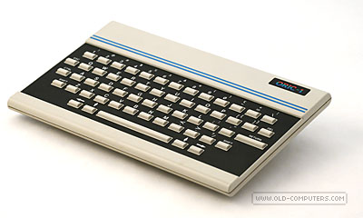
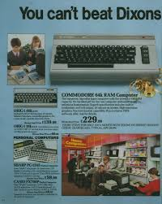
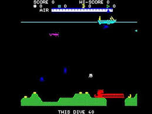

|
Last week I hit 49 years old and began a new journey to learn to code. I was thinking, maybe this old dog can learn a new trick. The last time I had a go at coding was thirty-plus years ago. It was a coding journey that began on my 13th birthday, in 1983. I was standing in an electronics store admiring the range of home computers. I remember there being a ZX-81 a ZX spectrum and I think I recall an Atari or Commodore. My auntie was with me and was going to foot the bill as a birthday treat. A young spotty salesperson in an ill-fitting shiny suit approached us and began his well-rehearsed pitch, "....with your sort of budget I would go for the Oric-1, unlike the ZX spectrum it has an easy to use a keyboard." |  |
|
It was a coding journey that began on my 13th birthday, in 1983. I was standing in an electronics store admiring the range of home computers.I remember there being a ZX-81 a ZX spectrum and I think I recall an Atari or Commodore. My auntie was with me and was going to foot the bill as a birthday treat. A young spotty salesperson in an ill-fitting shiny suit approached us and began his well-rehearsed pitch, "....with your sort of budget I would go for the Oric-1, unlike the ZX spectrum it has an easy to use a keyboard." The salesperson did a good job because we left the store with the last Oric-1 computer on the shelf. It had a massive 16 kilobytes of memory! Suit man also sold us a cassette recorder, "you'll need this to load your games and save your programmes." He also threw in a game called 'Scuba Diver,' on a tape cassette of course. The full bundle came to £150; that is £630 in today's money. |
|  |  |
|
The Oric did not come with a monitor. Getting it home, I had to plug the computer into the family's only television set, rented from Radio Rentals. I had to schedule my 'Scuba Diving' adventures around the family's TV viewing habits. For me, this was not just a games console. I soon discovered I got more fun out of trying programme this strange little machine, rather than just using it for collecting underwater pearls while avoiding sea urchins. I wanted to be the game creator! A computer programmer! Or as they are called it today, a developer! However, to realise my ambitions I needed even more time hogging our rented TV. The solution was to become a night owl, programming in the early hours until the sun came up when my mum would want to switch on TV-AM I spent many hours each night trying to get the Oric to do what I wanted it to. It communicated in a language called (Basic). Beginners All-Purpose Symbolic Instruction Code.
Until next time Happy Coding 😎 Daniel To say hello please click >>HERE<< |